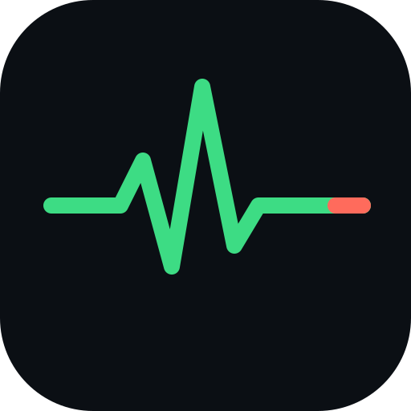

早上 6:10 到校，晚上 22:30 放学，一周 7 天。
6107 是「6107 作息」的简称，指早上 6:10 到校、晚上 22:30 放学、每周七天都在学校的节奏。它比 996 更彻底——没有周末，也没有下班。
这里不列学校黑名单，也不组织任何行动。只做一件事：把作息时间记录下来，让数据说话。
教育部《关于进一步加强中小学生睡眠管理工作的通知》（2021）：小学生每天睡眠应达 10 小时，初中生 9 小时，高中生 8 小时；中学上午上课时间一般不早于 8:00。
把各地的到校时间放在一起，就能看出这条规定在多大范围内没有落地。数字比控诉更难反驳。